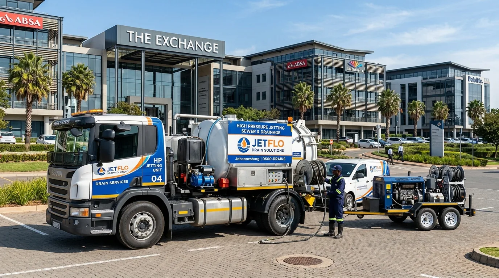
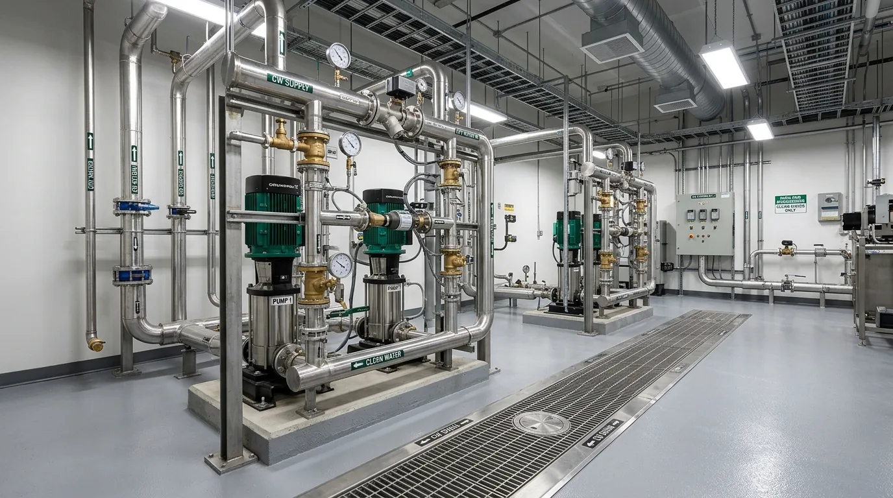
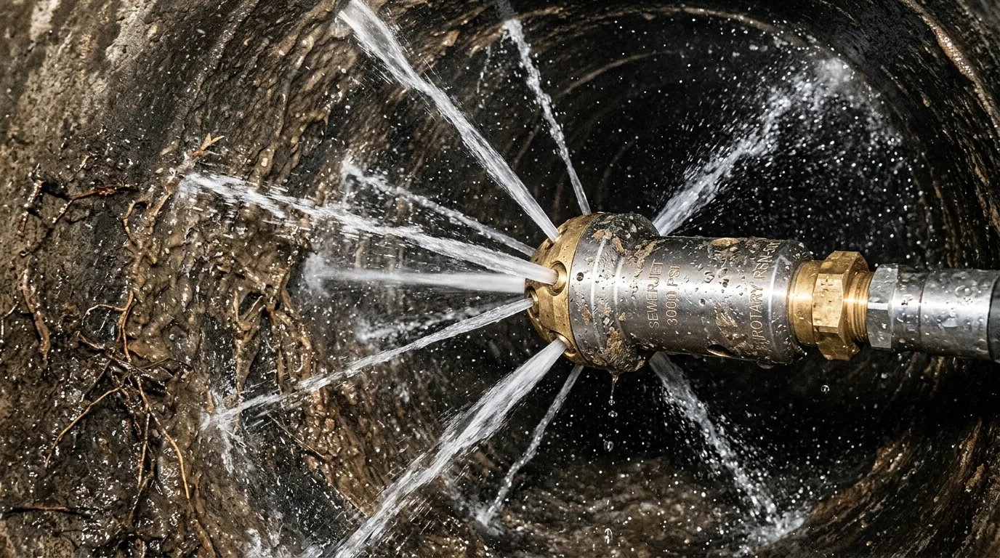

DRAINFIX FIELD SYSTEM CENTURION · KEMPTON PARK · GAUTENG
Find the fault.
Restore the flow.
A real person, a clear diagnosis and the right next step for your home, business or facility.
Flooding or sewage backup? Call now rather than wait for a message.

Clear water.
Clear answers.
A simple way to understand what happens after you contact DrainFix.
What are you dealing with today?
Start with what you can see. We’ll help you identify the right service and the next practical step.
Blocked toilets, basins, showers, gullies or external sewer backups.
Explore services ↗02The same drain keeps blockingGo beyond repeat call-outs with jetting, root removal and clearer diagnosis.
Explore services ↗03Need to see insideCCTV inspection helps locate collapses, roots and displaced joints.
Explore services ↗04Leaks, geysers & waterConnect with the right team for leaks, geysers, pumps and filtration.
Explore services ↗Clear work.
Clear next steps.
Real DrainFix project photography showing the equipment, people and systems behind the service.


